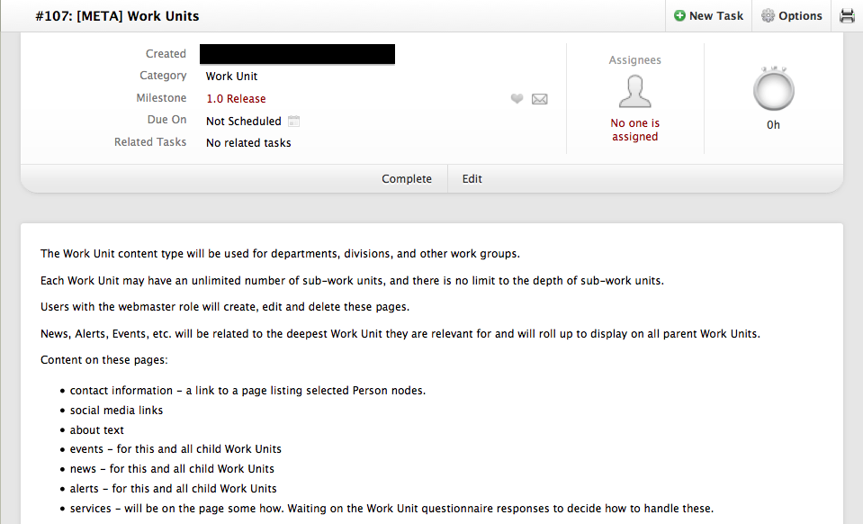
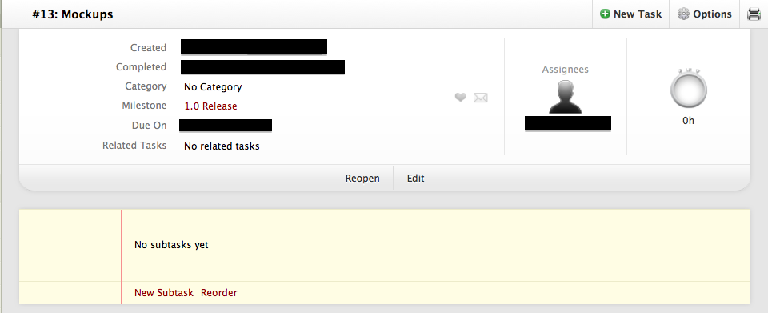

#DrupalCorn
The Site Builder's Guide to Project Management /
Genevieve Johnson
The Site Builder'sGuide toProject Management
DrupalCorn Camp 2015
Genevieve Johnson
genjohnson

Getting to know...
- the site owners
- the development team
- the project
Keeping track of evolving project requirements
Task tracking software
Trello, Asana, Basecamp, ActiveCollab, Redmine, ...
Overview per feature
Actionable tasks to get things done
Not so actionable task
More actionable task
Organize the tasks
Who is responsible for each task?
Multitasking kills productivity
Clark, K. B., & Wheelwright, S. C. (1993). Managing new product and process development: text and cases. The Free Press.
Documenting procedures and expectations
- store in an accessible location
- update as needed
Meetings
- send agenda in advance
- limit attendees
- cover immediate blockers
- follow up with a summary and next steps
Communicate and adapt
- Check in often and briefly
- Reflect on processes
Celebrate your successes!
■